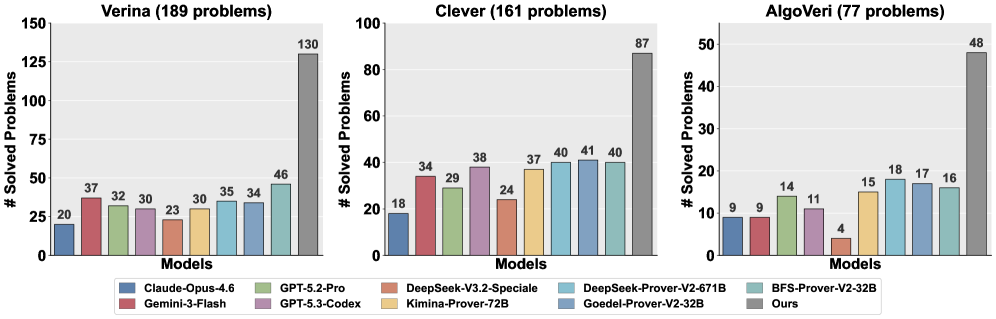

Hierarchical proof-search framework for automated code verification in Lean 4, training Goedel-Code-Prover-8B.
Abstract
Large language models (LLMs) can generate plausible code but offer limited guarantees of correctness. Formally verifying that implementations satisfy specifications requires constructing machine-checkable proofs, a task that remains beyond current automation. We propose a hierarchical proof search framework for automated code verification in Lean 4 that decomposes complex verification goals into structurally simpler subgoals before attempting tactic-level proving. Central to our approach is a principled decomposition score that combines constructive justification with structural effectiveness. Crucially, this score serves as both the training reward and the inference-time ranking criterion, ensuring strict alignment between optimization and deployment. We train Goedel-Code-Prover-8B, a single unified policy for both decomposition and completion, via supervised initialization followed by hybrid reinforcement learning, where a continuous decomposition reward drives planning exploration while supervised replay stabilizes proof generation. On three Lean-based code verification benchmarks comprising 427 tasks, our 8B-parameter model achieves a 62.0% prove success rate, a 2.6$\times$ improvement over the strongest baseline, surpassing neural provers up to 84$\times$ larger. We further observe consistent inference-time scaling: success rates improve monotonically with search iterations and sampling budget, with our trained model achieving greater efficiency than frontier off-the-shelf models of comparable scale.
Problem
Formally verifying that LLM-generated code satisfies its specifications requires constructing machine-checkable proofs, a task that remains beyond current automation. Existing approaches lack structured decomposition of complex verification goals.
Approach
The authors propose a hierarchical proof search framework for automated code verification in Lean 4. The system decomposes complex verification goals into structurally simpler subgoals before attempting tactic-level proving, guided by a principled decomposition score that combines constructive justification with structural effectiveness. Goedel-Code-Prover-8B is trained via supervised initialization followed by hybrid reinforcement learning, where a continuous decomposition reward drives planning exploration while supervised replay stabilizes proof generation.
Results
On three Lean-based code verification benchmarks comprising 427 tasks, the 8B-parameter model achieves a 62.0% prove success rate, a 2.6x improvement over the strongest baseline, surpassing neural provers up to 84x larger. Success rates improve monotonically with search iterations and sampling budget.

Figure 3: Number of solved problems by baselines and our framework across three benchmarks. Baselines are evaluated with parallel generation under a Pass@128 budget; our method operates under a search-based inference setting using Göedel-Code-Prover-8B. Our framework outperforms all baselines by a substantial margin across every benchmark.